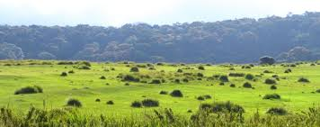
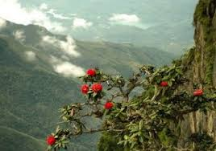

Horton Plains National Park is situated in the Central Province of Sri Lanka of Nuwara Eliya District. It is positioned at the eastern boundaries of the Upper Montane Forest Range (1500m-2524m above sea level) of Central Highland of Sri Lanka. The plateau of Horton Plains which is at a nominal elevation of 2100 m also bears the 2nd and the 3rd highest peaks of Sri Lanka, namely Kirigalpoththa (2389m) and Totupolakanda(2357m). The area of the Horton Plains is 3160 ha. or 31.6 sq. km. and is about 8% of the total upper montane forests and grasslands of Sri Lanka. The rainwater of Horton Plains plateau is drained through tributaries to Mahaveli river to the North (through Uma Oya), Walawe river to the South (through Belihul Oya and Kiriketi Oya) and Kelani river to the West (through Bogawantalawa Oya). Horton Plains has an average rainfall figure of around 5000mm though the surrounding areas have an average of 2540mm. Horton Plains gets more rain from North West monsoon and throughout the year even the minimum rain fall per month for the area had been 100mm. The mean annual temperature for the area is about 13C . One can expect temperatures as high as 27C during day and 5C during nights. The distance to Horton Plains from Nuwara Eliya is 32 km.
Prior to the British rule in the country, this area was called Maha Eliya. Around 1820s the British came to know about this unique nature resource. It was later renamed as Horton Plains after the then British Governor Sir Robert Horton (Governor from 1832-1837). Sir Samuel Baker made this area popularised during his hunting encounters. Two other British planters, namely Tomas Farr and H.Anderson who had estates near to Horton Plains had lodges built to facilitate their hunting episodes .During the British era, this area was under protection from the Administration Order of 1873, which prohibited cutting of forests above the altitude of 5000 feet in the island. Horton Place received the status of a National Park on 16th March 1988. Prior to that from 5th Dec. 1969 it had been a Nature Reserve . The Central Highland of Sri Lanka, which Horton Plains National Park is a part of it, received the status of a " Mixed Cultural and Natural World Heritage Site" on 2nd August 2010.Prior to the British rule in the country, this area was called Maha Eliya. Around 1820s the British came to know about this unique nature resource. It was later renamed as Horton Plains after the then British Governor Sir Robert Horton (Governor from 1832-1837). Sir Samuel Baker made this area popularised during his hunting encounters. Two other British planters, namely Tomas Farr and H.Anderson who had estates near to Horton Plains had lodges built to facilitate their hunting episodes .During the British era, this area was under protection from the Administration Order of 1873, which prohibited cutting of forests above the altitude of 5000 feet in the island. Horton Place received the status of a National Park on 16th March 1988. Prior to that from 5th Dec. 1969 it had been a Nature Reserve . The Central Highland of Sri Lanka, which Horton Plains National Park is a part of it, received the status of a " Mixed Cultural and Natural World Heritage Site" on 2nd August 2010.
 